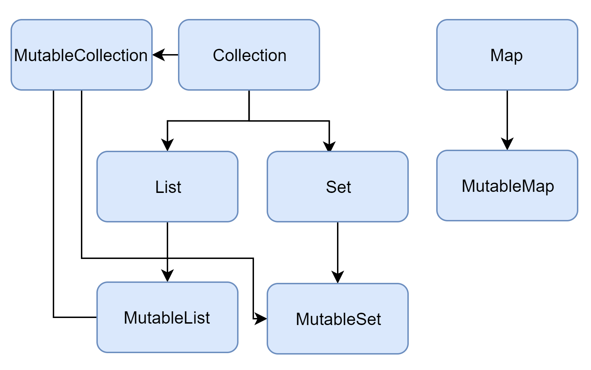

[Kotlin] 컬렉션 프레임워크 - (1) List
컬렉션 프레임워크
배열(Array)은 생성할 때 크기가 결정된다. 따라서 배열이 생성되면 동적으로 데이터를 추가하거나 삭제할 수 없다. 이를 해결하기 위해 Kotlin API는 컬렉션 프레임워크(Collection Framework)를 지원한다.
컬렉션 프레임워크에서 제공하는 인터페이스 및 클래스와 상속 구조는 다음과 같다.

List
변경 불가능한 리스트를 선언할 때는 listOf()메소드를 사용한다.
1 | // 초기화 이후 추가, 삭제, 변경 불가능 |
List클래스의 생성자를 사용할 수도 있다.
1 | val numbers: List<Int> = List<Int>(4, {index -> index}) |
MutableList
변경 가능한 리스트를 선언할 때는 mutableListOf()메소드를 사용한다.
1 | // 데이터 추가, 삭제, 변경이 가능 |
빈 리스트는 다음과 같이 생성한다.
1 | val numbers: MutableList<Int> = mutableListOf() |
MutableList클래스의 생성자를 사용할 수도 있다.
1 | val numbers: MutableList<Int> = MutableList<Int>(5, {index -> index}) |
ArrayList
변경 가능한 리스트는 ArrayList를 사용하여 구현할 수도 있다.
1 | // 빈 ArrayList 생성 |
집합 자료형 조작 함수
집합 자료형은 데이터 조작을 위한 다양한 메소드를 제공한다. 리스트의 대표적인 메소드 몇 가지만 알아보자.
(1) filter()
조건에 맞는 요소만 필터링하는데 사용한다.
1 | // 필터링 |
(2) sortedBy()
리스트를 조건에 맞게 정렬하는데 사용한다.
1 | // 정렬 |
(3) map(), forEach()
1 | val fruits = listOf("apple", "banana", "melon") |
위 코드는 다음과 같이 단축할 수 있다.
1 | val fruits = listOf("apple", "banana", "melon") |
(4) subList()
1 | val fruits = listOf("apple", "banana", "melon", "orange", "grape") |
(5) contains()
1 | val fruits = listOf("apple", "banana", "melon", "orange", "grape") |
(6) indexOf()
1 | val fruits = listOf("apple", "banana", "melon", "orange", "grape") |
Collections 클래스
Collections클래스는 Collection인터페이스를 구현한 클래스를 조작할 수 있는 다양한 메소드를 제공한다. 자세한 내용은 이 곳에서 확인할 수 있다.